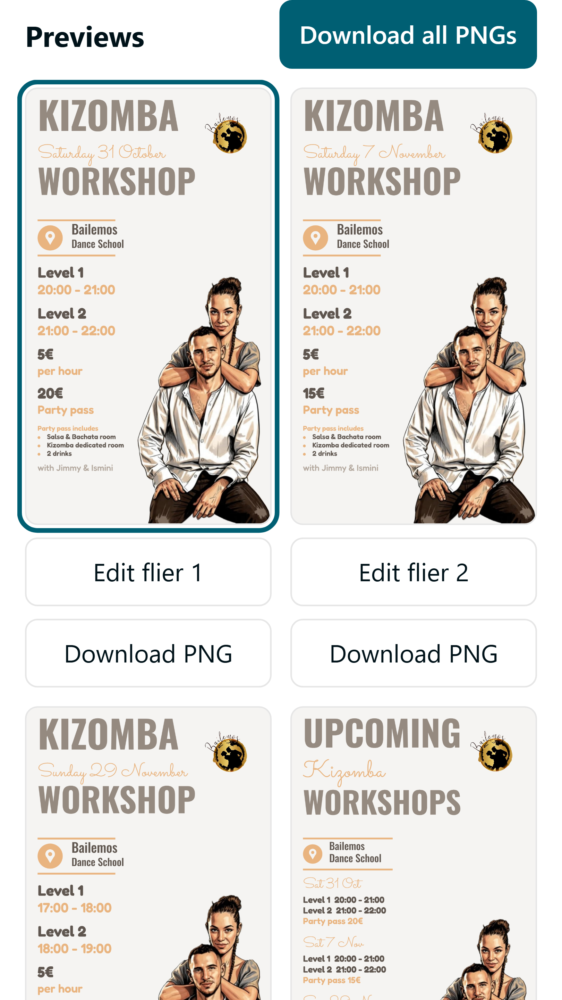
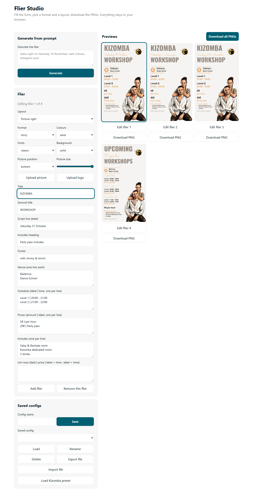
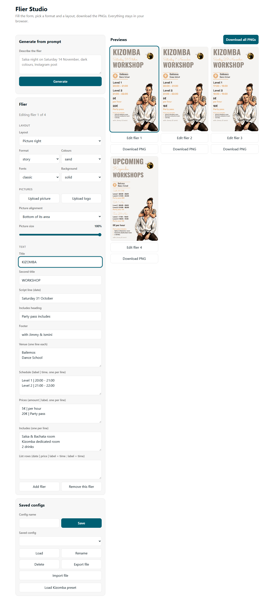

360x640, full height
360x640, anchored on Previews

1280x800, full height


Same route, state, fixture, viewport, scroll anchor and crop per pair; only the build differs. Records: result.json, written by build-result.mjs from frames/*.json (e2e/appCapture.spec.ts).


